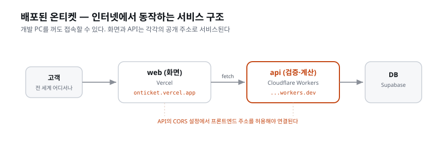

이 장이 끝나면: 온티켓의 모든 과정이 인터넷에서 동작한다. 공개된 웹 주소에 접속하면 화면이 뜨고, 그 화면이 배포된 API를 불러 실제로 예매가 된다. 배포 환경의 환경변수와 CORS를 맞춰 두 앱을 잇고, 공개 주소에서 예매를 처음부터 끝까지 진행하며 확인한다.
앞 장에서 API 서버를 배포했다. 이 장에서 프론트엔드를 배포하고, 그 둘을 잇는다. 지금까지 로컬에서 3000↔8787로 통신하던 두 앱이, 이제 각자의 공개 주소로 인터넷을 통해 통신한다. 이 연결이 완성되는 순간 온티켓은 '프로젝트'가 아니라 '서비스'가 된다.
이 대목을 조금 더 풀어 보자. 지금까지 우리가 만든 온티켓은 두 개의 프로그램이
한 컴퓨터(내 노트북) 안에서 나란히 돌고 있는 상태였다. 프론트엔드는
localhost:3000, API는 localhost:8787. 둘 다 '내 컴퓨터 안'이라는 같은 방
안에 있어서, 서로를 부르기가 쉬웠다. 하지만 이건 나만 볼 수 있는 세계다.
전원을 끄면 사라지고, 옆자리 동료에게 보여 줄 수도 없다. '만들었다'고는 할 수
있어도 '서비스한다'고는 할 수 없다.
배포(deploy)란 이 프로그램을 내 컴퓨터 밖, 항상 켜져 있는 인터넷상의 컴퓨터로 옮겨 누구나 접속할 수 있게 하는 일이다. 'deploy'는 원래 군대를 '배치한다'는 뜻인데, 소프트웨어에서는 코드를 실제 서비스되는 자리에 갖다 놓는다는 의미로 굳어졌다. API는 이미 배포했다. 이 장에서는 프론트엔드도 배포하고, 두 앱이 서로 통신할 수 있도록 연결한다. 이 연결이 이 장의 핵심이다.
같은 코드인데 환경이 바뀌면 두 가지를 다시 맞춰야 한다.
localhost:8787이었다. 배포된 프론트는 배포된
API 주소(onticket-api....workers.dev)로 요청을 보내야 한다 — 환경변수를
프로덕션 값으로localhost:3000이었다. 이제 배포된
프론트의 주소도 허용해야 한다 — 안 그러면 프론트엔드를 처음 붙일 때 만난 그 CORS의 벽이 프로덕션에서
다시 나타난다이 둘은 배포 초보가 반드시 부딪히는 지점이다. 미리 알고 넘으면 당황하지 않는다.
왜 하필 이 둘일까? 답은 간단하다. 로컬에서는 프론트와 API가 같은 컴퓨터 안에서 실행되었고, 로컬 주소와 CORS 허용 출처를 이미 설정해 두었다. 배포하면 둘이 서로 다른 회사의 서버, 서로 다른 인터넷 주소로 흩어진다. 그러면 "너 어디 있어?"(주소)와 "너를 믿어도 돼?"(CORS 허용)를 다시 명시적으로 알려 줘야 한다. 이 두 가지는 성격이 다르다.
| 다시 맞출 것 | 로컬 값 | 배포 값 | 어디를 고치나 | 성격 |
|---|---|---|---|---|
| API 주소 | http://localhost:8787 |
https://onticket-api....workers.dev |
프론트의 환경변수 (Vercel) | "상대가 어디 있는지" |
| CORS 허용 출처 | http://localhost:3000 |
https://<프론트>.vercel.app |
API의 CORS 설정 (api 코드) | "상대를 믿어도 되는지" |
주소를 고치는 곳은 프론트 쪽(프론트가 API를 부르니까)이고, 허용을 고치는 곳은 API 쪽(API가 프론트를 받아 주니까)이라는 점을 헷갈리지 말자. 초보가 가장 자주 뒤섞는 지점이다. "화면이 안 나온다 → 프론트를 고쳐야지"라고 착각하기 쉬운데, CORS 문제라면 실제로 손대야 할 곳은 API다. 로컬에서 프론트를 붙일 때 이미 겪은 원리이고, 프로덕션이라고 달라지지 않는다.
[짚고 가기] 이 표 한 장이 이 장 전체의 지도다. 나중에 "화면은 뜨는데 목록이 안 나와요" 같은 상황을 만나면 이 표로 돌아오면 된다. "지금 문제는 '주소'인가 '허용'인가?"를 먼저 묻는 습관을 들여두면 좋다. 콘솔에 CORS 에러가 찍혀 있으면 허용(API), 요청이 아예 엉뚱한 곳으로 가면 주소(환경변수)다.
이 장에서 처음, 또는 본격적으로 만나는 용어들이다. 배포는 낯선 단어가 몰려 나오는 구간이라 여기서 한 번 정리하고 가면 실습이 훨씬 수월하다. 완벽히 외울 필요는 없다 — "이런 게 있구나" 정도로 눈에 익혀 두면 된다.
Vercel은 프론트엔드(Next.js) 배포에 특화된 호스팅이다. 호스팅(hosting) 이란 내 웹사이트를 항상 켜져 있는 남의 컴퓨터(서버)에 올려 두고, 전 세계 방문자가 접속할 수 있게 해 주는 서비스를 말한다. 옛날에는 서버 컴퓨터를 직접 사서 운영체제를 깔고, 웹 서버 프로그램을 설정하고, 도메인을 연결하는 일을 사람이 다 했다. Vercel은 이 모든 것을 대신 해 주는 회사다. 특히 Next.js를 만든 회사가 직접 운영하는 호스팅이라, Next.js 앱을 올리면 별다른 설정 없이도 최적의 상태로 배포된다. 이 궁합 때문에 온티켓의 프론트(Next.js)를 Vercel에 올린다. (인프라를 정리할 때 vercel CLI에 로그인해 둔 것이 이 배포의 준비였다.)
Vercel 말고 다른 선택지도 많다. 표로 감을 잡아 두자.
| 서비스 | 특징 | 이 과정에서 |
|---|---|---|
| Vercel | Next.js 제작사가 운영. 저장소 연동과 미리보기 배포가 강점 | 프론트(web) 배포에 사용 |
| Netlify | Vercel과 비슷한 프론트 특화 호스팅. 오래된 경쟁자 | 대안. 방식이 거의 같다 |
| Cloudflare Pages | Cloudflare의 프론트 호스팅. Workers와 궁합 | 대안 |
| GitHub Pages | 정적 사이트에 특화. 무료·간단하지만 기능 제한 | 단순 페이지엔 충분 |
| Cloudflare Workers | 서버(API) 실행에 특화 | API(api) 배포에 사용(API를 배포하며 완료) |
온티켓은 프론트를 Vercel에, API를 Cloudflare Workers에 나눠 올린다. "왜 한 군데에 안 몰아넣지?"라는 질문이 나올 수 있는데, 프론트(화면 그리기)와 API(데이터 처리)는 성격이 다른 작업이므로 각각에 적합한 호스팅을 선택한 것이다. 이렇게 화면과 서버를 갈라서 배포하는 구조를 분리형 아키텍처라 하고, 온티켓은 처음부터 이 구조로 설계됐다. 배포 환경이 다르기 때문에 이 장 첫머리의 두 가지(주소·CORS)를 맞춰 줄 필요가 생기는 것이기도 하다.
요금 이야기도 초보에게는 걱정거리다. Vercel은 개인·학습용으로 쓸 수 있는 무료 등급(Hobby) 을 제공한다. 온티켓처럼 학습용 프로젝트를 배포하고 접속을 확인하는 정도는 무료 등급 안에서 충분히 소화된다.
[짚고 가기] Vercel이 뭐고 Cloudflare가 뭔지 자꾸 헷갈리기 쉽다. 한 줄로 정리하면 이렇다 — "화면은 Vercel, 서버는 Cloudflare." 온티켓의 두 폴더(web/·api/)와 두 호스팅을 짝지어 그려 두면 이후 CORS 개념이 훨씬 쉽게 잡힌다. 그리고 "무료로 되나?" 하는 걱정도 흔한데, 이 과정은 Hobby 등급 안에서 모든 실습을 마칠 수 있으니 안심하고 실습하면 된다.
우리가 쓴 코드는 사람이 읽기 좋은 형태다. 브라우저가 빠르게 실행하려면 압축·최적화된 형태로 변환해야 하는데, 이 과정이 빌드다. 로컬 개발 서버는 빌드 없이 즉석 실행했지만, 배포에는 빌드된 결과물이 올라간다. Vercel이 배포할 때마다 이 빌드를 자동으로 한다. "로컬에선 됐는데 배포에서 깨지는" 문제의 상당수가 빌드 단계에서 드러난다 — 그래서 배포 후 검증이 중요하다.
'빌드(build)'는 말 그대로 '짓는다'는 뜻이다. 흩어져 있는 재료(우리가 쓴 여러 파일)를 모아 하나의 완성된 결과물(브라우저가 바로 실행할 수 있는 최적화된 파일 묶음)로 조립하는 과정이라 이 이름이 붙었다. 요리에 비유하면, 개발 서버는 고객이 주문할 때마다 즉석에서 만들어 주는 오픈 키친이고, 빌드는 미리 대량으로 조리해 포장까지 끝내 두는 것이다. 포장된 완제품이라야 인터넷 어디서든 빠르게 배달될 수 있다.
여기서 초보가 자주 놀라는 지점 하나. 로컬 개발 서버에서 잘 돌던 화면이 빌드할 때 처음으로 에러를 뿜는 경우가 있다. 개발 서버는 관대해서 몇몇 문제를 눈감고 넘어가지만, 빌드는 엄격하게 전부 검사하기 때문이다. 대표적으로 타입 오류, 쓰지 않는 import, 서버에서만 되는 코드를 화면에 섞어 쓴 경우 등이 빌드에서 걸린다. 이건 실패가 아니라 "배포 전 최종 점검"이라고 보면 된다. 빌드가 막히면 당황하지 말고 에러 원문을 그대로 AI에게 주면 된다.
프론트에도 환경변수가 있다. 로컬은 web/.env.local에
NEXT_PUBLIC_API_URL=http://localhost:8787 이었다. 배포 환경에서는 이 값을
Vercel의 환경변수 설정에 프로덕션 API 주소로 넣는다. 이름은 같고 값만
환경마다 다르다 — 코드는 한 글자도 안 바뀐다. 프론트엔드도
로컬 환경과 배포 환경에서 환경변수 값을 따로 설정한다.
(주의: NEXT_PUBLIC_으로 시작하는 환경변수는 화면 코드에 포함되어
브라우저에 노출된다. 그래서 여기엔 공개돼도 되는 값만 넣는다 — API 주소는
공개돼도 되지만, 시크릿 키는 절대 여기 넣지 않는다. 결제를 붙일 때 배운 클라이언트/시크릿 키의
구분이 여기서도 지켜진다.)
이 설정을 잘못하면 비밀값이 유출될 수 있으므로 좀 더 자세히 살펴보자.
먼저 환경변수(environment variable) 는 코드 안에 값을 직접 박아 넣는 대신,
"환경(로컬이냐 배포냐)에 따라 달라지는 값"을 코드 바깥에 따로 빼 둔 것이다.
API 주소가 대표적이다 — 로컬에선 localhost:8787, 배포에선 ...workers.dev.
값을 바깥에 빼 두었기 때문에, 코드는 NEXT_PUBLIC_API_URL이라는 이름만
부르고, 실제 값은 환경마다 다르게 채워진다. 그래서 "코드는 한 글자도 안
바뀐다".
이제 NEXT_PUBLIC_이라는 접두어의 의미다. Next.js에는 두 종류의 코드가 있다 —
서버에서만 도는 코드와 브라우저(고객의 화면)까지 내려가는 코드. 환경변수는
기본적으로 서버에만 머무는데, 이름 앞에 NEXT_PUBLIC_을 붙이면 "이 값은
브라우저에 실어 보내도 좋다" 는 표시가 된다. 접두어의 뜻 그대로 'public(공개)'인
것이다. 브라우저로 내려간 값은 누구나 개발자 도구를 열어 들여다볼 수 있다 —
숨길 수 없다.
여기서 철칙이 나온다.
NEXT_PUBLIC_API_URL (API 주소): 공개돼도 됨. 어차피 브라우저가 그 주소로
요청을 보내니 숨길 수도 없고, 숨길 이유도 없다. 접두어를 붙여도 된다.NEXT_PUBLIC_에 넣지 않는다.
이건 서버(api)에서만 사용해야 하는 키다. 브라우저에 포함되는 환경변수에 넣으면
누구나 그 값을 볼 수 있다.'클라이언트 키'와 '시크릿 키'의 구분은 결제를 붙일 때 이미 배웠다.
그 구분이 배포에서도 그대로 살아 있다는 것이 핵심이다. 판별법은 한 문장이면
된다 — "이 값이 브라우저 개발자 도구에 그대로 보여도 괜찮은가?" 괜찮으면
NEXT_PUBLIC_, 안 괜찮으면 서버(api) 환경변수로 보낸다.
[짚고 가기] 여기서 "그럼 시크릿 키는 어디에 두냐"가 헷갈리기 쉽다. 토스 결제 승인처럼 시크릿 키가 필요한 일은 프론트가 아니라 api(서버)가 한다. 그래서 시크릿 키는 api 쪽 환경변수(API를 배포하며 Cloudflare에 넣은 시크릿)에 있고, 프론트에는 올 일이 없다. "프론트는 공개 값만, 서버는 비밀 값도"라는 한 줄로 정리해 두면 헷갈리지 않는다. 실무에서 시크릿 키를 프론트에 잘못 넣어 유출되는 사고가 흔하니, 이 구분은 확실히 익혀두는 게 좋다.
두 앱을 잇는 순서는 정해져 있다.
1. 프론트의 프로덕션 API 주소 설정 (Vercel 환경변수 = 배포된 API URL)
2. 프론트 배포 (Vercel이 빌드·배포 → 프론트 공개 URL)
3. API의 CORS에 프론트 주소 허용 (배포된 프론트 URL을 api 허용 목록에)
4. 처음부터 끝까지 검증 (공개 화면에서 실제 예매 한 바퀴)

3번을 빠뜨리면 화면은 뜨는데 데이터가 안 나온다(CORS 차단). 이때 당황하지 않는 법은 로컬에서 프론트를 붙일 때 배웠다 — 콘솔의 CORS 에러 원문을 그대로 AI에게 주고, "고칠 곳이 api"임을 안다. 프로덕션이라고 원리가 다르지 않다.
이 순서에는 이유가 있다. 왜 하필 이 순서인지 풀어 보자.
NEXT_PUBLIC_API_URL 값이
화면 코드 안에 포함된다. 그래서 배포(빌드)하기 전에 값이 정해져 있어야
한다. 값을 나중에 바꾸면 다시 빌드(재배포)해야 반영된다. 그러니 주소부터.https://<프로젝트>.vercel.app). 주소를 모르면 허용할 수도 없으니,
프론트를 먼저 띄우고 그 주소를 받아 와 CORS에 넣는 순서가 된다.여기서 가장 중요한 안전장치는 "3번을 빠뜨려도 화면은 뜬다" 는 점을 미리 아는 것이다. 초보는 "화면이 떴으니 다 됐다"고 착각하기 쉽다. 하지만 화면(HTML·CSS)은 프론트 혼자서 그릴 수 있고, 목록 데이터는 API에서 와야 한다. CORS 허용 전에는 화면은 멀쩡히 뜨는데 목록 자리만 비어 있는 중간 상태가 된다. 이건 고장이 아니라 3번을 아직 안 한 정상적인 중간 단계다. 이 사실을 미리 알면, 그 순간 당황하지 않고 "아, CORS 차례구나" 하고 다음 단계로 넘어갈 수 있다.
CORS를 다시 한 줄로 복습하면: 브라우저는 안전을 위해, 화면을 띄운
출처(origin)와 다른 주소로 요청을 보낼 때 "저쪽 서버가 나를 허락했는가" 를
따진다. 서버가 허락 목록(CORS 허용 출처)에 내 주소를 넣어 두지 않으면, 브라우저가
스스로 응답을 막아 버린다. 로컬에선 API가 localhost:3000을 허락해 뒀지만,
배포된 프론트는 주소가 달라졌으니 다시 허락받아야 한다. 전체 허용(*)으로
뚫어 버리는 것은 금물 — 아무 사이트나 우리 API를 부를 수 있게 되기 때문이다.
필요한 출처만 콕 집어 허용한다.
검증의 핵심은 처음부터 끝까지(E2E) 다. 조각별로 "떴다"가 아니라, 고객이 실제로 하는 여정 — 공개 주소 접속 → 목록 → 예매 → 결제 → QR — 이 처음부터 끝까지 배포된 서비스에서 동작하는지 본다.
'E2E'는 'End to End(처음부터 끝까지)'의 약자다. 왜 조각 검사로는 부족한가? 프론트도 떴고, API도 떴고, DB도 살아 있다 — 조각은 다 초록불인데, 정작 고객이 예매를 못 하는 경우가 있다. 조각 사이의 연결(주소·CORS·인증)이 어긋나면, 개별 부품은 멀쩡해도 여정이 끊긴다. E2E 검증은 부품이 아니라 고객의 여정 전체를 따라가며, 인터넷을 통한 앱 간 연결까지 정상인지 확인한다. 온티켓에서는 "리버사이드 재즈 목록 → 예매 → 테스트 결제 → QR → DB에 주문 저장"이 한 줄로 이어지는지를 본다. 이 과정이 모두 성공하면, 온티켓은 정말로 '서비스'가 된 것이다.
[짚고 가기] 이 절은 "화면 떴으니 끝"이라는 착각을 깨는 자리다. 직접 CORS 허용 전 상태(화면은 뜨는데 목록이 빈 상태)를 만들어 보고, 콘솔의 빨간 CORS 에러를 읽은 뒤, 허용을 넣고 새로고침해서 목록이 채워지는 장면을 확인해 보면 확실히 몸에 남는다. "빈 화면이 고장이 아니라 3번 차례라는 신호"라는 것을 손으로 익히는 것이 이 절의 목표다.
이 장의 지시는 대부분 "설정을 맞추고, 배포하고, 연결을 검증"하는 종류다. 프롬프트에서 잊지 말아야 할 것은 세 가지다 — 이번에 바뀌는 값(배포 주소처럼 사람만 아는 값)을 말하고, 어디를 고치는지(프론트인지 api인지) 명확히, 무엇이 보이면 됐는지(완료 기준)를 넣는 것. 반대로 파일에 이미 적혀 있는 것(필요한 변수의 이름 같은 것)은 외워서 적지 않고 그 파일을 가리킨다.
web/ 을 Vercel에 연결해줘. 프로젝트를 만들고, web/.env.local의 환경변수를 Production에 등록한 다음 배포해줘.API 주소는 배포된 주소({배포API URL})로 넣어. 배포가 끝나면 프론트 URL을 알려줘.{…} 자리만 실제 주소로 바꿔 입력한다.
연결(link), 환경변수 등록, 배포를 한 지시로 맡긴다. 셋은 순서가 정해진 한 묶음이라 나눠 시킬
이유가 없다. 필요한 변수는 web/.env.local에 다 있으니 이름을 외워 적지 않는다. 사람이 말한
것은 바뀌는 값 하나다 — API 주소는 로컬 주소가 아니라 배포된 주소로 넣는다는 것. 이 값은
API를 배포할 때 메모해 둔 사람만 안다. "프론트 URL을 알려줘"를 붙인 것은 그 주소가 다음 지시의
입력값이기 때문이다.
web/.env.local에 있는 값은 둘 다 공개돼도 되는 값이다 — API 주소와 토스 클라이언트 키. 토스
시크릿 키는 api/.env에만 있어서 여기 섞이지 않는다.
CORS는 따로 시킨다. 프론트의 진짜 주소는 배포해 봐야 나오니, 한 지시에 미리 담을 수가 없다. 주소가 나온 뒤에 이어서 말한다.
방금 나온 프론트 주소를 api의 CORS 허용 출처에 추가하고 api를 재배포해줘.로컬(localhost:3000)도 개발용으로 유지하고, 전체 허용(*)은 쓰지 마.사람이 주소를 받아 다시 적어 넣지 않는다. 그 주소를 방금 손에 넣은 AI에게 이어서 시키는 편이 짧고 정확하다.
이 지시에는 좋은 제약이 세 겹 들어 있다 — (1) 고칠 곳이 api라고 지목한 것 (CORS 설정은 api 코드에 있다), (2) 로컬도 유지(개발을 계속해야 하니까), (3) 전체 허용 금지(아무 사이트나 우리 API를 부를 수 있게 되니까). 그리고 api 재배포까지 시킨 것 — 코드만 고치고 배포하지 않으면 공개 주소의 API에는 변경 사항이 반영되지 않는다.
마지막 검증에는 프롬프트가 없다. 이 검증은 AI에게 시키는 일이 아니라 사람이 브라우저에서 직접 진행하는 일이기 때문이다. 확인 순서는 고객이 예매하는 순서와 같다 — 목록 → 예매 → 테스트 결제 → QR → DB 저장. 단계마다 무엇을 보면 통과인지는 실습의 통과 신호 표에 정리해 두었다.
같은 목적이라도 어떻게 말하느냐에 따라 결과가 갈린다. 강한 지시는 조건을 많이 적은 지시가 아니라, 사람만 아는 결정을 말하고 기준이 되는 파일을 가리키는 지시다.
| 흔한(약한) 지시 | 고친(강한) 지시 | 무엇을 바꿨나 |
|---|---|---|
| 배포해줘 | web/ 을 Vercel 프로덕션에 배포하고, 최종 프론트 URL을 알려줘 | 무엇을 배포하는지 + 받아야 할 결과(URL) — 기대 결과를 말했다 |
| 화면에 목록이 안 떠, 고쳐줘 | (콘솔의 CORS 에러 원문 붙여넣고) 이 에러가 났어. 원인부터 설명하고, api의 CORS 허용에 배포된 프론트 주소를 추가해줘 | 증상만 말하지 말고 근거(에러 원문) 제공 + 고칠 곳(api) 지정 |
| 환경변수 좀 넣어줘 | web/.env.local의 환경변수를 Production에 등록해줘. API 주소는 배포된 주소로 넣어 | 필요한 변수는 web/.env.local에 있다 — 그 파일을 지목했다. 사람은 바뀌는 값만 말한다 |
| CORS 열어줘 | 배포된 프론트 주소만 api CORS 허용 출처에 추가하고, 전체 허용(*)은 쓰지 마. 로컬도 유지 | "열어줘"의 범위를 콕 집고 위험한 전체 허용을 차단 — 어디까지 열지는 사람이 긋는 금지선 |
| 잘 되는지 봐줘 | (지시가 아니라 사람의 확인 절차) 공개 주소에서 고객 여정 순서대로 내가 직접 밟고, 마지막에 프로덕션 DB의 orders까지 본다 | 막연한 "잘"을 단계별 통과 신호로. 이 검증은 AI에게 맡기지 않는다 |
세 가지 실전 감각을 덧붙인다.
*)"이나 "시크릿 키를
프론트에" 같은 위험한 지름길을 AI가 편의상 제안할 수 있다. "전체 허용은 쓰지
마", "시크릿은 여기 넣지 마"를 미리 울타리로 쳐 두면 안전하다.[짚고 가기] 가장 흔히 저지르는 약한 지시가 "화면에 아무것도 안 떠요, 고쳐줘"다. 이럴 때는 "무엇을 붙여야 AI가 고칠 수 있을까?"를 스스로 되물어, 콘솔 에러 원문을 직접 복사해 붙이는 게 좋다. 에러 원문을 읽고 붙이는 습관이 배포 트러블슈팅의 8할이다. 첫날 익힌 "원인부터 설명하고 고쳐줘"가 여기서 다시 위력을 발휘한다.
따라하기는 하나다. 앞에서 정한 네 단계를 그 안에서 차례로 밟는다 — 환경변수 → 배포 → CORS → 처음부터 끝까지 검증. 환경변수와 배포는 한 프롬프트로, CORS는 이어서 한 프롬프트로 시키고, 마지막 검증은 사람이 브라우저에서 직접 진행한다. 이 실습이 끝나면 공개 주소에서 예매부터 결제까지 진행할 수 있다.
① 연결하고, 환경변수를 넣고, 배포한다.
web/ 을 Vercel에 연결해줘. 프로젝트를 만들고, web/.env.local의 환경변수를 Production에 등록한 다음 배포해줘.API 주소는 배포된 주소({배포API URL})로 넣어. 배포가 끝나면 프론트 URL을 알려줘.{…} 자리만 API를 배포할 때 메모해 둔 주소로 바꿔 입력한다. 이 값은 빌드할 때 화면 코드 안에
포함되므로 배포 전에 들어가 있어야 한다 — 그래서 등록한 다음 배포하라고 순서를 말했다.
배포가 도는 동안 Vercel 대시보드에서는 빌드 로그가 실시간으로 흐른다.
"Building..." 상태를 지나 초록불(Ready)이 되면 배포 완료이고, 이때
https://<프로젝트>.vercel.app 형태의 공개 URL이 나온다. Ready 상태가 되기 전에
빌드에서 실패한다면, 용어 정리에서 말한 "배포 전 최종 점검"에
걸린 것이다. 빌드 로그 맨 아래에 실패 원인이 찍혀 있으니, 그 원문을 그대로 복사해
AI에게 주고 "빌드가 이 에러로 실패했어. 원인부터 설명하고 고쳐줘"라고 시킨다.
프론트 URL이 나오면 그 주소를 한 번 열어 보자. 앞에서 예고한 중간 상태를 직접 볼 수 있다 — 화면(HTML·CSS)은 멀쩡히 뜨는데 목록 자리만 비어 있고, 개발자 도구(F12) 콘솔에는 이런 에러가 찍혀 있다.
Access to fetch at 'https://onticket-api....workers.dev/공연목록경로'
from origin 'https://<프론트>.vercel.app' has been blocked by CORS policy:
No 'Access-Control-Allow-Origin' header is present on the requested resource.
"<프론트> 주소에서 API로 보낸 요청이 CORS 정책에 막혔다. 응답에 나(프론트)를 허용한다는 표시가 없다." 즉 API가 아직 이 프론트 주소를 허락 목록에 안 넣었다는 뜻이고, 고칠 곳은 명백히 api다. 고장이 아니라 CORS 차례가 왔다는 신호라는 것을 눈으로 확인해 두면, 다음에 같은 화면을 만나도 당황하지 않는다.
② 두 앱을 잇는다.
방금 나온 프론트 주소를 api의 CORS 허용 출처에 추가하고 api를 재배포해줘.로컬(localhost:3000)도 개발용으로 유지하고, 전체 허용(*)은 쓰지 마.위 프롬프트를 그대로 복사해 입력하면 된다. 배포를 먼저 하고 이 지시를 나중에 넣는 것은 순서가 정해져 있기 때문이다 — 프론트의 진짜 주소는 배포를 해 봐야 손에 들어오고, 그 주소가 있어야 CORS에 넣을 수 있다.
CORS 설정은 api 코드에 있으므로, 고친 뒤 api를 재배포해야 서비스에 반영된다(코드만 고치고 배포하지 않으면 기존 API는 바뀌지 않는다). 재배포까지 끝나면 프론트 주소를 새로고침한다. 비어 있던 자리에 리버사이드 재즈를 비롯한 이벤트 목록이 채워지면, 배포된 두 앱이 인터넷을 통해 정상적으로 통신한다는 뜻이다. 이 순간이 이 장 첫머리에서 말한 "두 앱을 하나의 서비스로" 잇는 연결이 완성되는 지점이다.
여기서 한 가지가 남았다. CORS 설정은 로컬의 api 코드를 수정해 배포한 것이므로, 원격 저장소에는 아직 이전 설정이 남아 있다. 저장소의 코드와 배포된 코드가 일치하도록 변경 사항을 올려야 한다. 곧 배포를 자동으로 돌릴 텐데, 그때 기준은 저장소의 코드다 — 옛 설정이 다시 배포되면 방금 고친 것이 되돌아간다.
CORS 고친 것 커밋해줘.푸시해줘.③ 처음부터 끝까지 예매한다.
이 단계에는 프롬프트가 없다. 공개 프론트 주소에서 사람이 브라우저로 예매 과정을 진행한다. 리버사이드 재즈 → 등급·수량 → 이메일 → 결제(테스트) → 완료 화면 QR, 그리고 Supabase 프로덕션 DB의 orders에서 방금 주문을 확인한다. 각 단계에서 무엇을 보면 통과인지 정리하면 이렇다.
| 단계 | 고객의 행동 | 통과 신호 | 어떤 연결을 증명하나 |
|---|---|---|---|
| 접속 | 공개 프론트 URL 열기 | 화면이 뜬다 | 프론트 배포 성공 |
| 목록 | 이벤트 목록 확인 | 리버사이드 재즈 등이 보인다 | 프론트↔API 주소·CORS 연결 |
| 예매 | 등급·수량 선택, 이메일 입력 | 주문 단계로 넘어간다 | API 주문 처리 |
| 결제 | 테스트 결제 진행 | 결제 완료로 넘어간다 | 토스(클라이언트 키)↔api(승인) |
| 완료 | 완료 화면 확인 | QR 티켓이 보인다 | 예매 전체 마무리 |
| 저장 | Supabase orders 확인 | 방금 주문이 실제로 있다 | API↔프로덕션 DB 저장 |
마지막 줄이 특히 중요하다. 화면에서 "완료"가 떴다고 끝이 아니라, 그 주문이 프로덕션 DB(Supabase)의 orders 테이블에 실제로 남았는지까지 확인해야 진짜 처음부터 끝까지다. 화면만 성공한 척하고 데이터는 안 남는 경우를 잡아내는 마지막 관문이다. 방금 예매의 이메일이나 주문번호로 orders에서 찾으면 된다. 이 한 줄까지 확인되면, 배포된 온티켓에서 예매 과정 전체가 정상적으로 동작함을 확인할 수 있다.
[짚고 가기] 이 체크리스트는 앞에서 정한 네 단계와 맞물린다. "다 됐다" 싶을 때, 특히 마지막 항목(주문이 프로덕션 DB에 실제로 저장됐는지)은 반드시 눈으로 확인하고 넘어가자. 화면만 성공한 척하고 데이터가 안 남는 경우가 흔한 함정이라, 이 항목을 건너뛰지 않는 것이 처음부터 끝까지 검증하는 습관의 핵심이다.
NEXT_PUBLIC_ 환경변수는 브라우저에 노출된다 — 공개돼도 되는 값만.
시크릿 키는 절대 넣지 않는다(클라이언트/시크릿 키 구분의 연장). 판별법은
한 문장 — "이 값이 브라우저 개발자 도구에 보여도 괜찮은가?"온티켓은 이제 공개 주소로 접속할 수 있다. 다만 지금은 사람이 배포를 지시해 반영한 상태다. 코드를 고칠 때마다 사람이 배포 명령을 실행해야 한다. 다음 장에서는 코드를 push할 때마다 자동으로 배포되도록 설정한다.